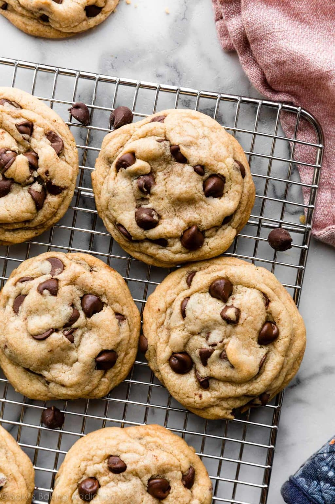

Chocolate Chip Cookies

Description
My family absolutely loved these chocolate chip cookies! I'm starting to love baking a little more since the instructions are so easy.
This cookie recipe from Sally's Baking Addiction has the right amount of sweetness and it certainly satisfied my cravings.
Ingredients
- 2 and 1/4 cups (280g) all-purpose flour, melted and cooled
- 1 tsp. baking soda
- 1 and 1/2 tsp. cornstarch
- 1/2 tsp. salt
- 3/4 cup (170g) unsalted butter, melted and cooled 5 minutes
- 3/4 cup (150g) packed light or dark brown sugar
- 1/2 cup (100g) granulated sugar
- 1 large egg + 1 egg yolk, at room temperature
- 2 tsp. pure vanilla extract
- 1 and 1/4 cups (225g) semi-sweet chocolate chips or chocolate chunks
Steps
- Whisk the flour, baking soda, cornstarch, and salt together in a large bowl. Set aside.
- In a medium bowl, whisk the melted butter, brown sugar, and granulated sugar together until no brown sugar lumps remain. Whisk in the egg and egg yolk. Finally, whisk in the vanilla extract.
The mixture will be thin. Pour into dry ingredients and mix together with a large spoon or rubber spatula.
The dough will be very soft, thick, and appear greasy. Fold in the chocolate chips.
The chocolate chips may not stick to the dough because of the melted butter, but do your best to combine them.
- Cover the dough tightly and chill in the refrigerator for at least 2–3 hours or up to 3 days.
- Take the dough out of the refrigerator and allow it to slightly soften at room temperature for 10 minutes.
- Preheat oven to 325°F (163°C). Line large baking sheets with parchment paper or silicone baking mats. Set aside.
- Using a cookie scoop or Tablespoon measuring spoon, measure 3 scant Tablespoons (about 2 ounces, or 60g) of dough for XL cookies
or 2 heaping Tablespoons (about 1.75 ounces, or 50g) of dough for medium/large cookies. Roll into a ball,
making sure the shape is taller rather than wide—almost like a cylinder. This helps the cookies bake up thicker.
Repeat with remaining dough. Place 8–9 balls of dough onto each cookie sheet.
- Bake the cookies for 12–13 minutes or until the edges are very lightly browned.
(XL cookies can take closer to 14 minutes.) The centers will look very soft, but the cookies will continue to set as they cool.
Cool on the baking sheet for 10 minutes. Meanwhile, press a few extra chocolate chips into the tops of the warm cookies.
This is optional and only for looks. After 10 minutes of cooling on the baking sheets, transfer cookies to a wire rack to cool completely.
- Cookies stay fresh covered at room temperature for up to 1 week.